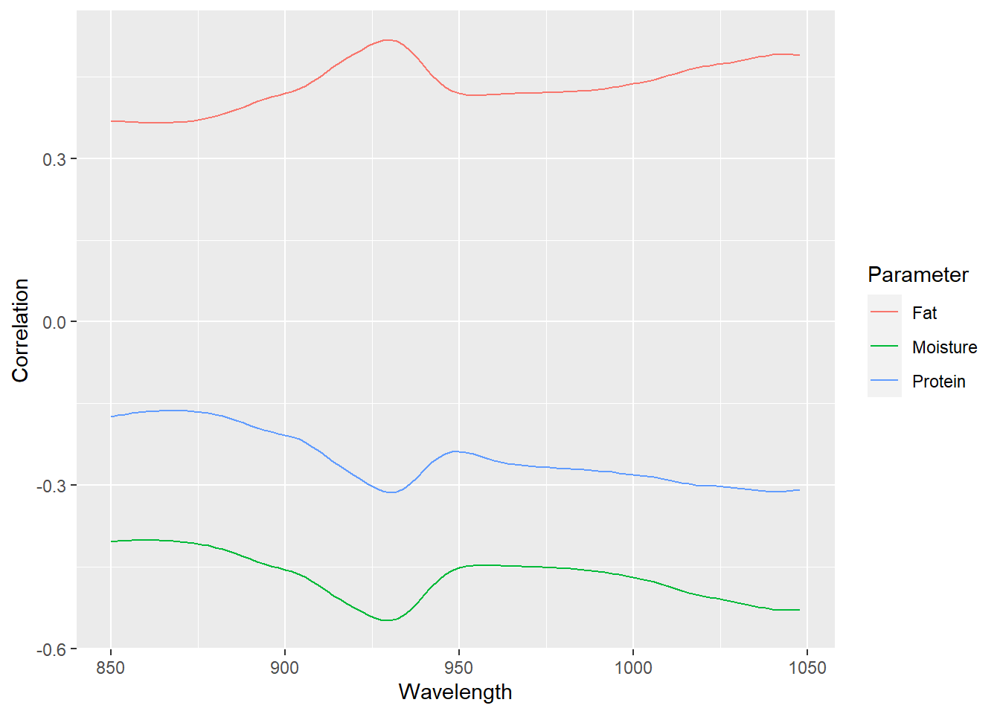

library(tidyverse)
library(corrplot)
load("C:/BLOG/Workspaces/NIT Tutorial/NIT_ws2.RData")
ls()[1] "absorp" "endpoints" "meats" "meats_longer" "tecator" José Ramón Cuesta
September 29, 2022
Let´s start loading the libraries we are going to use in this post and the workspace from the previous post.
It is important to check the correlation between the outcomes variables (Moisture, Fat and Protein in this case). As we remember the outcomes are in the “endpoints” matrix.
Moisture Fat Protein
Moisture 1.0000000 -0.9881002 0.8145212
Fat -0.9881002 1.0000000 -0.8608965
Protein 0.8145212 -0.8608965 1.0000000The correlation matrix show how the are high correlations between the three parameters, but we can use graphics to see it more clearly:
But to check better the trends and the possible outliers, we can use the function “pairs
This way we can see at least six outliers that seems to have some bias versus the linear trend. What are the reason for these outliers? (samples different from the rest, different reference method, bias in the reference method,…). We will try to see along the tutorial.
It is known that the NIR or NIT predictor variables are highly correlated, due that we are working with overtones and combination bands, so the correlation matrix in this case show high correlation between all the variables, due to we are in the third overtone and working with very broad bands.For this reason we have to apply math treatments to the spectra to remove the scatter effect and derivatives to improve the resolution of the bands. The correlation between predictors is a long matrix (100.100), so the best way to see it it is graphically. By now we see the correlation matrix of the raw spectra (without any math treatment)
Another point is how the variation in the predictors matrix correlates with the variation of the outcomes. What we do is to see which wavelengths correlate better with a certain parameter getting three correlation spectra (one for every parameter).
cor_rawspec_moi <- cor(tecator$Moisture, tecator$spec)
cor_rawspec_fat <- cor(tecator$Fat, tecator$spec)
cor_rawspec_prot <- cor(tecator$Protein, tecator$spec)
cor_rawspec <- as.data.frame(rbind(cor_rawspec_moi, cor_rawspec_fat, cor_rawspec_prot))
cor_rawspec <- cor_rawspec %>%
mutate(Parameter = as.factor(c("Moisture", "Fat", "Protein")))
cor_rawspec %>%
pivot_longer(cols = c(1:100), names_to = "Wavelength", values_to = "Correlation") %>%
mutate(Wavelength = as.integer(Wavelength)) %>%
ggplot(aes(x = Wavelength, y = Correlation, group = Parameter, col = Parameter)) +
geom_line()
As we can see there are no wavelengths with high correlations, and if we would auto-scale every correlation spectrum, the spectrum would seem as a meat sample spectra (for moisture and protein inverted). All this is due to the scatter physical effects. So, with some math treatments to remove it the correlation will improve. Anyway, in the third overtone due to the bands overlapping, we would need a multivariate calibration with all or almost all the wavelengths.
As always save the workspace for future use: